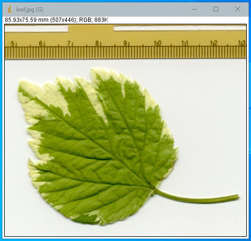

昔ながらのルールベースの画像処理をもとに「2値化処理」について説明します。
「2値化処理」は、画像を白と黒の2色のみに変換する画像処理です。
画像処理の定番の流れとして以下のようなものがありますが、「2値化処理」は重要な処理の1つです。
- 画像のグレイスケール化（8-bit化）
- 前処理（ぼかし、シャープネス、エッジ抽出など）
- 画像内の対象物の特徴を抽出しやすくします。
- 2値化処理
- 後処理（膨張、収縮など）
- ノイズ除去などの整形を行います。
- ブロブ解析など
- 特徴量（数、面積、長さなど）を計測します。
また葉っぱの画像を使います。

Image→Type→8-bit を実行します。
2値化処理をする前に、Process→Binary→Optionを実行し、Black backgroundをONにしてください。ここを忘れると2値化処理後の画像が、黒255／白0になります。私は気持ちが悪いのでONにします。
Image→Adjust→Threshold を実行します。
上下のスライダーで設定された数値で挟まれる輝度が255、それ以外が0になります。上の場合、0～168の範囲が255になります。赤の部分が適切になるように、スライダーを調整してください。
決まったら「Apply」をクリックしてください。
2値化完了です。
少し解析してみます
ImageJには、「Analize Particles」というブロブ解析用のコマンドがありますので使います。
Analyze→Analize Particlesを実行します。チェックボックスは以下のように設定してOKをクリックします。
今回は簡単に解析できましたが、前処理や後処理を駆使して解析をする場合もあります。画像処理とブロブ解析の一例も参考にしてみてください。